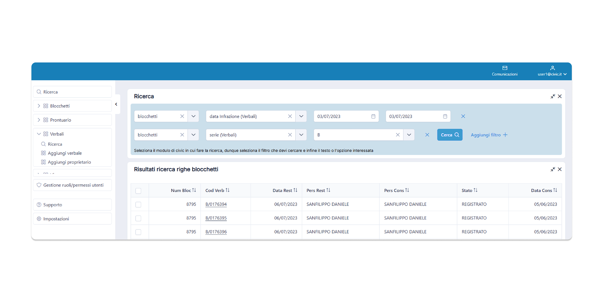
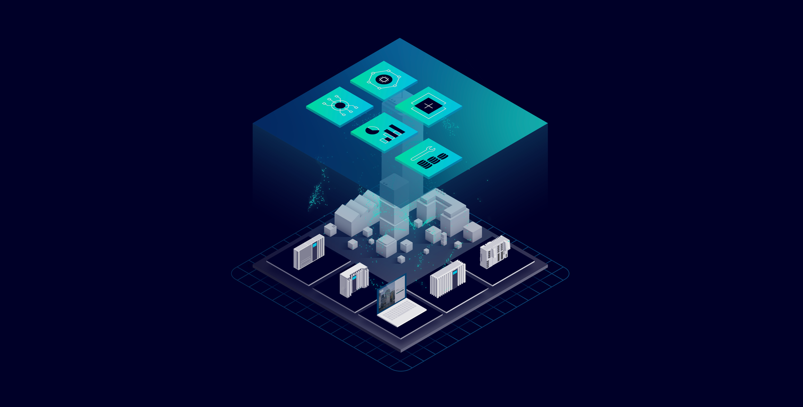
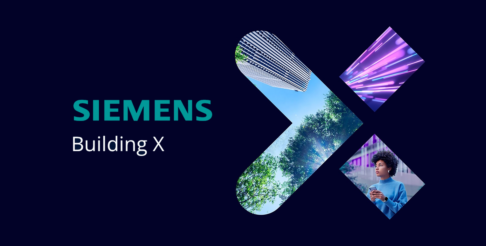
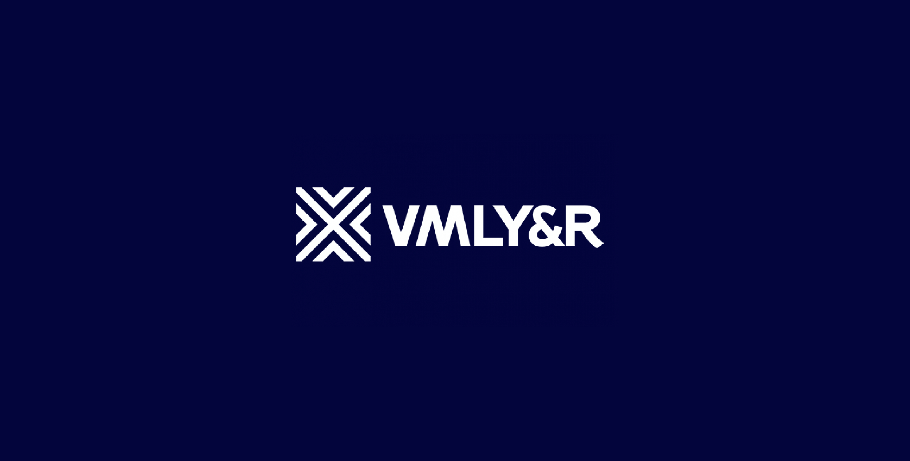
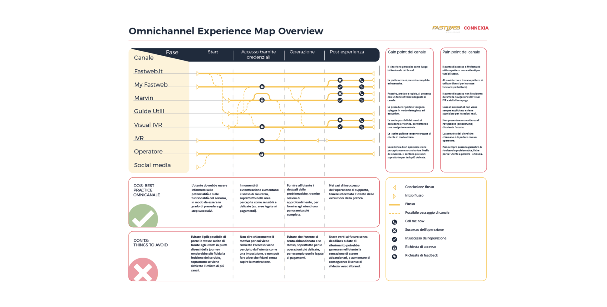

All work.Tutti i lavori.
Selected case studies across consulting, enterprise products and agencies. Casi studio selezionati tra consulenza, prodotti enterprise e agenzie.

CivicCivic
End-to-end redesign of a 25-year-old platform for the full lifecycle of fines — 700+ fields across 45 screens. Redesign end-to-end di una piattaforma ventennale per l'intero ciclo di vita delle sanzioni — oltre 700 campi su 45 schermate.
View case studyVedi il caso studio →
Energy ManagerEnergy Manager
Monitoring and optimizing energy across complex building portfolios, from discovery to developer handoff. Monitoraggio e ottimizzazione energetica su portfolio edilizi complessi, dalla discovery all'handoff agli sviluppatori.
View case studyVedi il caso studio →
Siemens Building XBuilding X
First end-to-end mapping of the building onboarding journey — 40+ users across 3 continents. Prima mappatura end-to-end del journey di onboarding degli edifici — oltre 40 utenti su 3 continenti.
View case studyVedi il caso studio →
VMLY&RVMLYR
Product & service design across the agency's digital division — e-commerce and digital products for Whirlpool, Lavazza and Bolton. Product & service design nella divisione digital dell'agenzia — e-commerce e prodotti digitali per Whirlpool, Lavazza e Bolton.
View case studyVedi il caso studio →
ConnexiaConnexia
Product design and innovation consulting — emerging AR/VR tech and service blueprints for Fastweb, SisalPay and ActionAid. Product design e consulenza d'innovazione — tecnologie emergenti AR/VR e blueprint di servizio per Fastweb, SisalPay e ActionAid.
View case studyVedi il caso studio →Experis
Product design and ownership on internal products — Frankie, a manager-performance tracker, and CV Scanner, a recruitment-orchestration tool. Product design e ownership su prodotti interni — Frankie, tracker delle performance dei manager, e CV Scanner, strumento di orchestrazione del recruiting.
View case studyVedi il caso studio →Cheatsheets & tools.Cheatsheet e strumenti.
Side projects from my ham-radio studies — reference sheets and small interactive tools. Progetti personali nati dallo studio per la patente di radioamatore — schede di riferimento e piccoli strumenti interattivi.
ComponentsComponenti
Radio-engineering components, from resistor to MOSFET: symbol, unit, formulas and key parameters. I componenti di radiotecnica, dalla resistenza al MOSFET: simbolo, unità, formule e parametri chiave.
Open cheatsheetApri il cheatsheet →Block diagramsSchemi a blocchi
Block diagrams of radio transmitters and receivers by emission mode, with formulas for the licence exam. Schemi a blocchi di trasmettitori e ricevitori per modo di emissione, con le formule per l'esame.
Open cheatsheetApri il cheatsheet →Ionospheric propagationPropagazione ionosferica
Interactive simulator: pick bands, power and solar activity and see how waves bounce off the D, E and F layers. Simulatore interattivo: scegli bande, potenza e attività solare e guarda come le onde rimbalzano sugli strati D, E ed F.
Open toolApri lo strumento →Milan radio schedulesPalinsesti radio Milano
Who's on air, and when: weekday schedules of Milan's main FM stations, hour by hour. Chi va in onda, e quando: i palinsesti feriali delle principali radio FM di Milano, ora per ora.
Open toolApri lo strumento →